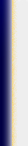
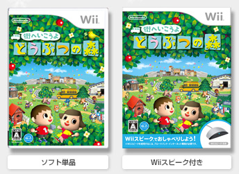
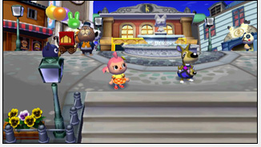
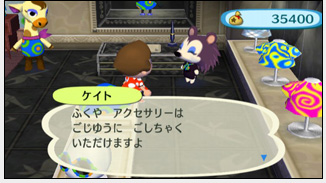
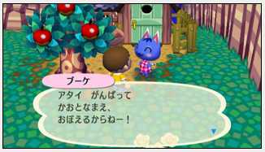
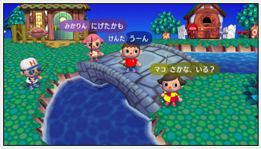

|  |  |
|
DS版『おいでよ どうぶつの森』発売から早３年。シリーズ最新作がＷｉｉに登場です。 プレイヤーごとに毎日の過ごし方が違うように、村の様子や部屋の内装も人によってさまざま。ニンテンドーWi-Fiコネクションを使えば、友だちの村にお出かけしたり、自分の村に友だちを招待したり。マイク機能を持った周辺機器「Ｗｉｉスピーク」を用意すれば、テレビを通して自分の声を友だちに届けることができるので、お互いに「Ｗｉｉスピーク」を持っていれば友だちがその場にいるような感覚で遊べそうですね。 ちなみに、DS版『おいでよ どうぶつの森』で使っている自分のキャラクターを、Ｗｉｉにお引っ越しさせることもできます。DS版をお楽しみの方は、心機一転Ｗｉｉでの生活も試してみてください。 日常のちょっとした変化に何かステキなことを見つけられる人なら、きっと楽しめるこのゲーム。何かとストレスの溜まりがちな世の中、ホッとした憩いの時間を感じたいときにいかがでしょうか。 |
|  |  | ||
|  |  |